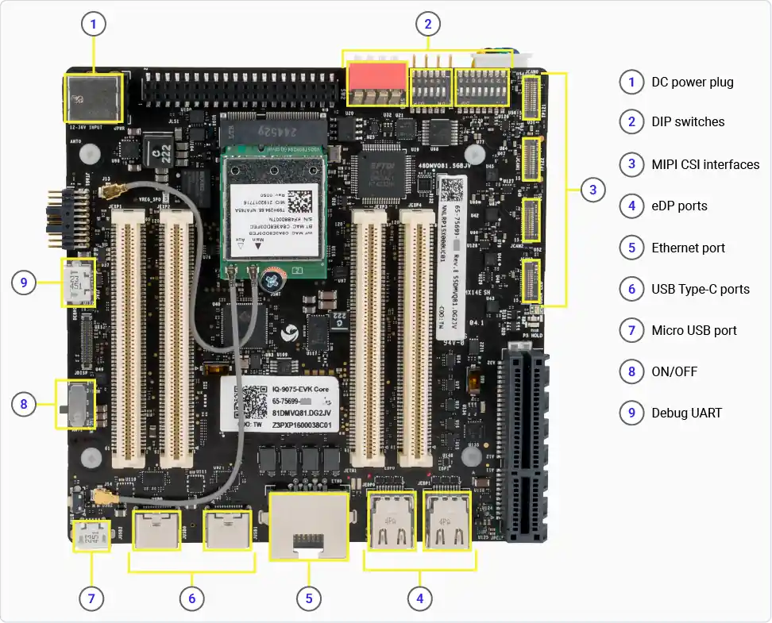

Flash Ubuntu 24.04 onto the IQ-9075 EVK
Complete guide to flashing Ubuntu 24.04 LTS (Server or Desktop) onto the Qualcomm Dragonwing IQ-9075 EVK using the QDL tool.
What you need
| Item | Purpose |
|---|---|
| IQ-9075 EVK | Board to be flashed |
| 12 V DC power supply | Power the board (included in box) |
| USB Type-C cable | Flash cable — connects to USB0 port on the EVK |
| Micro-USB cable | Debug UART console (optional but recommended) |
| Ubuntu/Linux host | Machine running the QDL flashing tool |
01
Download Files & Prepare Image Directory
▶
Download all three components below, then assemble them into a single working directory.
Boot Firmware (NHLOS binaries)
Download the boot firmware archive from CodeLinaro:
↓ CodeLinaro — QLI.1.6-Ver.1.1 Boot FirmwareDownload QLI.1.6-Ver.1.1-ubuntu-QCS9100-nhlos-bins.tar.gz.
Ubuntu OS Image
Download the Ubuntu image from Cannonical's website:
↓ Cannonical — Ubuntu 24.04 Desktop Image ↓ Cannonical — Ubuntu 24.04 Server ImageDownload iot-qualcomm-dragonwing-classic-XX-XXXX.img.xz , dtb.bin and rawprogram0.xml to your system.
rawprogram0.xml — open file on browser & Right-click → Save As and save to location.
QDL Flashing Tool
Download the Qualcomm Device Loader (QDL) tool:
↓ Qualcomm Software Center — QDL v2.3.9 (Linux x86)Organize the Image Directory
mkdir ~/iq9_ubuntu_images cd ~/iq9_ubuntu_images
Extract the NHLOS archive into iq9_ubuntu_images:
tar -xzf ~/Downloads/QLI.1.6-Ver.1.1-ubuntu-QCS9100-nhlos-bins.tar.gz -C ~/iq9_ubuntu_images
patch0.xml file was extracted from the firmware archive, delete it before continuing:
rm ~/iq9_ubuntu_images/patch0.xml
dtb.bin and rawprogram0.xmlcp ~/Downloads/dtb.bin ~/iq9_ubuntu_images/ cp ~/Downloads/rawprogram0.xml ~/iq9_ubuntu_images/
This may take a few minutes. Choose your variant:
Server
unxz ~/Downloads/iot-qualcomm-dragonwing-classic-server-2404-x08-20260210.4096b.img.xz cp ~/Downloads/iot-qualcomm-dragonwing-classic-server-2404-x08-20260210.4096b.img ~/iq9_ubuntu_images/
Desktop
unxz ~/Downloads/iot-qualcomm-dragonwing-classic-desktop-2404-x08-20260210.4096b.img.xz cp ~/Downloads/iot-qualcomm-dragonwing-classic-desktop-2404-x08-20260210.4096b.img ~/iq9_ubuntu_images/
cd ~/iq9_ubuntu_images unzip ~/Downloads/qdl-linux-x86-2.3.9.zip chmod +x qdl
Expected directory contents
Before flashing, ~/iq9_ubuntu_images/ should contain some key files :
| File | Source |
|---|---|
prog_firehose_ddr.elf | Image Programmer |
rawprogram*.xml | Boot firmware + Canonical |
patch*.xml | Boot firmware |
dtb.bin | Canonical |
iot-qualcomm-dragonwing-classic-[server|desktop]-XXXXXX.img | Canonical (decompressed) |
sail_nor/ (subdirectory) | Boot firmware |
qdl | QDL tool (if not using an existing QDL elsewhere) |
02
Verify Hardware is Working
Optional
▶
The IQ-9075 EVK ships with a pre-installed Qualcomm Linux image. Before flashing Ubuntu, you can verify the hardware is functional by observing the boot process over the debug UART. This step is optional — if you want to go straight to flashing, skip to Step 3.
Connect the Micro-USB cable to the Debug UART port on the EVK and to your host computer. Then plug in the 12 V power supply.

sudo apt update && sudo apt install -y screen picocom
ls /dev/ttyUSB*
Sample output: /dev/ttyUSB0 or /dev/ttyUSB1
Using screen:
sudo screen /dev/ttyUSB1 115200
Or using picocom:
sudo picocom -b 115200 /dev/ttyUSB1
/dev/ttyUSB1 to match the port from step 3. The debug UART port is typically /dev/ttyUSB1. Try all other ports if boot logs are not visible.
Plug in the 12 V power supply (if not already connected). You should see the Qualcomm Linux boot log scrolling in the terminal — kernel messages, service startup, and a login prompt. This confirms the board and UART connection are working correctly.
Do not log in. Power off the board before proceeding to flashing.
03
Put the Device into EDL Mode
▶
EDL (Emergency Download) mode allows the QDL tool to write directly to the board's UFS storage.
Disconnect the 12 V power supply. Ensure the board is fully off before proceeding.
Push the SW2-3 DIP switch to the UP (ON) position to enable EDL mode.

Plug the power supply back in to power the board on in EDL mode.
Connect the USB Type-C flash cable from the EVK to the host computer.
lsusb
You should see a Qualcomm QDL device:
Bus 002 Device 014: ID 05c6:9008 Qualcomm, Inc. Gobi Wireless Modem (QDL mode)
If the device is not detected, try a different USB port on the host or check the SW2-3 switch position.
04
Configure Host & Flash
▶
Set up udev rules (first time only)
The host needs a udev rule so QDL can access the Qualcomm USB device without root privileges.
ls /etc/udev/rules.d/ | grep qcom
If 51-qcom-usb.rules exists, skip to step 3 to verify its contents.
echo 'SUBSYSTEMS=="usb", ATTRS{idVendor}=="05c6", ATTRS{idProduct}=="9008", MODE="0664", GROUP="plugdev"' | sudo tee /etc/udev/rules.d/51-qcom-usb.rules
sudo systemctl restart udev
Disconnect and reconnect the USB Type-C cable to apply the new rule.
Flash the firmware and OS
~/iq9_ubuntu_images/. If you extracted QDL elsewhere, replace ./qdl with the full path to your QDL binary.
cd ~/iq9_ubuntu_images
From inside sail_nor/ subdirectory:
cd ~/iq9_ubuntu_images/sail_nor ../qdl --storage spinor prog_firehose_ddr.elf rawprogram0.xml patch0.xml
Back in the main image directory:
cd ~/iq9_ubuntu_images ./qdl --storage ufs prog_firehose_ddr.elf rawprogram*.xml patch*.xml
This step takes several minutes. Wait for the QDL tool to confirm completion before proceeding.
Expected output on a successful flash:
waiting for programmer... flashed "disk" successfully at 131400kB/s flashed "xbl_a" successfully flashed "xbl_b" successfully flashed "xbl_config_a" successfully flashed "xbl_config_b" successfully flashed "PrimaryGPT" successfully flashed "BackupGPT" successfully flashed "aop_a" successfully flashed "shrm_a" successfully flashed "uefi_a" successfully flashed "uefisecapp_a" successfully flashed "xbl_ramdump_a" successfully flashed "dtb_a" successfully at 65536kB/s flashed "tz_a" successfully flashed "hyp_a" successfully flashed "devcfg_a" successfully flashed "cpucp_a" successfully flashed "multiimgoem_a" successfully flashed "multiimgqti_a" successfully flashed "imagefv_a" successfully flashed "aop_b" successfully flashed "dtb_b" successfully flashed "imagefv_b" successfully flashed "shrm_b" successfully flashed "uefi_b" successfully flashed "uefisecapp_b" successfully flashed "xbl_ramdump_b" successfully flashed "tz_b" successfully flashed "hyp_b" successfully flashed "devcfg_b" successfully flashed "cpucp_b" successfully flashed "multiimgoem_b" successfully flashed "multiimgqti_b" successfully flashed "toolsfv" successfully flashed "PrimaryGPT" successfully flashed "BackupGPT" successfully 52 patches applied partition 1 is now bootable
05
First Boot & Login
▶
Push the SW2-3 DIP switch back to DOWN (OFF).
Choose how you want to complete the first-time setup. Both methods go through the same login and password change flow.
Via Debug UART (Server or Desktop)
Connect the Micro-USB cable to the Debug UART port on the EVK and to your host computer. Open a serial terminal (as in Step 2):
sudo picocom -b 115200 /dev/ttyUSB1
Connect the 12 V power supply. Watch the serial terminal — you should see the Ubuntu boot log scrolling. Wait until you see a login prompt.
Enter the default credentials, then follow the password change prompts:
| Prompt | Enter |
|---|---|
| login: | ubuntu |
| Password: | ubuntu |
| Current password: | ubuntu |
| New password: | Your new password |
| Retype new password: | Confirm new password |
Via GUI (Desktop only)
Connect a monitor to the mini-DisplayPort on the EVK using a mini-DP cable or a mini-DP to HDMI/DP adapter. Plug a USB keyboard and mouse into the USB ports.
Connect the 12 V power supply. Ubuntu Desktop will boot directly to the graphical login screen.
Log in with username ubuntu and password ubuntu. The system will prompt you to set a new password before continuing.
06
Troubleshooting & FAQ
▶
QDL device not detected after entering EDL mode
If lsusb does not show the Qualcomm QDL device (05c6:9008):
- Confirm the SW2-3 DIP switch is in the UP (ON) position.
- Make sure you are using the USB0 port, not USB1.
- Try a different USB cable or a different USB port on your host.
- Power-cycle the board: disconnect 12 V, wait 5 seconds, reconnect.
QDL flashing fails or hangs
- Ensure the udev rule is in place and udev has been reloaded (
sudo systemctl restart udev). - Disconnect and reconnect the USB cable after reloading udev.
- Check that all required files are in
~/iq9_ubuntu_images/— see the expected directory listing in Step 1.
No output on Debug UART
- Verify the Micro-USB cable is connected to the Debug UART port (not USB0/USB1/USB2).
- Try the other
/dev/ttyUSB*port — the debug port is typically the higher-numbered one. - Confirm the baud rate is set to 115200.
Board boots but login prompt never appears
- The first boot after flashing can take several minutes. Wait at least 3–5 minutes before concluding it has stalled.
- Press Enter a few times to see if login prompt appears
- If the boot log shows errors, try re-flashing the image from scratch.
Password change fails or loops
- The new password must meet Ubuntu's default complexity requirements (typically 8+ characters).
- If it keeps rejecting, try a longer password with mixed characters.
Desktop boots to a black screen
- Verify the mini-DP cable or adapter is firmly connected.
- Try a different monitor or adapter — some mini-DP to HDMI adapters are not compatible.
- The Debug UART console will still work — use it to verify the system has booted and troubleshoot from there.